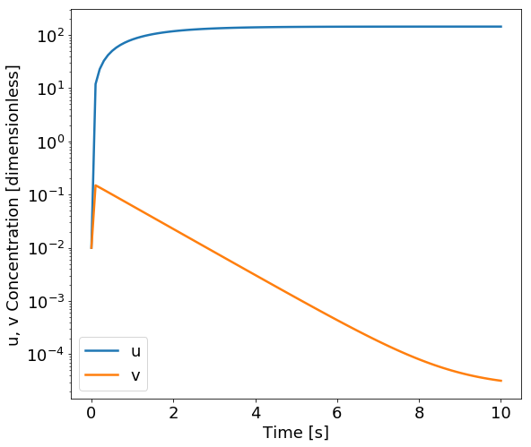
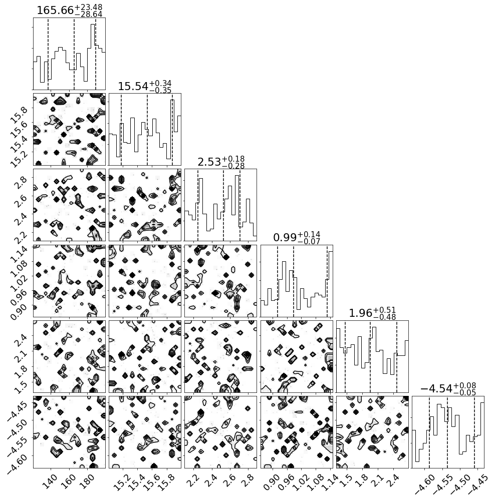

In [27]:
%matplotlib inline
import numpy as np
from scipy.integrate import odeint
import emcee
import corner
import time
from approxposterior import mcmc_utils
import matplotlib as mpl
import matplotlib.pyplot as plt
mpl.rcParams.update({'font.size': 18})
In [2]:
def genetic_model(y, t, alpha1, alpha2, gamma, beta, eta, IPTG, K):
# u = y[0], v = y[1]
u, v = y
w = u/(1.0 + np.power(IPTG/K,eta))
return [alpha1/(1.0 + np.power(v,beta)) - u, alpha2/(1.0 + np.power(w,gamma)) - v]
In [32]:
# Initial conditions
t = np.linspace(0.0, 10.0, 100)
alpha1 = 143.0
alpha2 = 15.95
gamma = 2.70
beta = 0.96
eta = 2.34
K = 2.7e-5
IPTG_arr = [1.0e-6, 5.0e-4, 7.0e-4, 1.0e-3, 3.0e-3, 5.0e-3]
obs = []
# Initial guess
y0 = [1.0e-2, 1.0e-2]
In [33]:
start = time.time()
for IPTG in IPTG_arr:
sol = odeint(genetic_model, y0, t, args=(alpha1, alpha2, gamma, beta, eta, IPTG, K))
obs.append(float(sol[-1,1] + np.sqrt(5.0e-4)*np.random.randn(1)))
print(time.time() - start)
0.0551753044128418
In [26]:
obs
Out[26]:
[0.0042446468180771845,
15.959527323170379,
15.954493544851326,
15.974484804281184,
15.960322032987762,
15.951934835901294]
In [5]:
fig, ax = plt.subplots(figsize=(9,8))
ax.plot(t, sol[:,0], lw=2.5, label="u")
ax.plot(t, sol[:,1], lw=2.5, label="v")
# Format
ax.legend()
ax.set_yscale("log")
ax.set_ylabel("u, v Concentration [dimensionless]")
ax.set_xlabel("Time [s]")
Out[5]:
<matplotlib.text.Text at 0x11ae204a8>

In [6]:
obs = float(sol[-1,1] + np.sqrt(5.0e-4)*np.random.randn(1))
print(obs)
-0.06928720154657597
In [7]:
sol[-1,1]
Out[7]:
3.1826343015096331e-05
In [8]:
np.sqrt(5.0e-4)
Out[8]:
0.022360679774997897
In [9]:
def genetic_lnprior(x):
"""
Uniform log prior for the genetic switch likelihood following Wang & Li (2017)
where the prior pi(x) is a uniform distribution for each parameter.
Parameters
----------
x : array
Returns
-------
l : float
log prior
"""
x = np.array(x)
if x.ndim > 1:
alpha1 = x[:,0]
alpha2 = x[:,1]
gamma = x[:,2]
beta = x[:,3]
eta = x[:,4]
K = x[:,5]
else:
alpha1, alpha2, gamma, beta, eta, K = x
# All flat priors from Wang & Li (2017)
if np.any(alpha1 < 120.0) or np.any(alpha1 > 200.0):
return -np.inf
elif np.any(alpha2 < 15.0) or np.any(alpha2 > 16.0):
return -np.inf
elif np.any(gamma < 2.1) or np.any(gamma > 2.9):
return -np.inf
elif np.any(beta < 0.85) or np.any(beta > 1.15):
return -np.inf
elif np.any(eta < 1.3) or np.any(eta > 2.7):
return -np.inf
elif np.any(K < np.log10(2.3e-5)) or np.any(K > np.log10(3.7e-5)):
return -np.inf
else:
return 0.0
# end function
In [10]:
def genetic_sample(n):
"""
Sample N points from the prior pi(x) is a uniform distribution over
ranges given in Wang & Li (2017) for the genetic toggle example.
Parameters
----------
n : int
Number of samples
Returns
-------
sample : floats
n x 6 array of floats samples from the prior
"""
alpha1 = np.random.uniform(low=120.0, high=200.0, size=(n,1))
alpha2 = np.random.uniform(low=15.0, high=16.0, size=(n,1))
gamma = np.random.uniform(low=2.1, high=2.9, size=(n,1))
beta = np.random.uniform(low=0.85, high=1.15, size=(n,1))
eta = np.random.uniform(low=1.3, high=2.7, size=(n,1))
K = np.random.uniform(low=np.log10(2.3e-5), high=np.log10(3.7e-5), size=(n,1)) # Log prior
return np.hstack([alpha1, alpha2, gamma, beta, eta, K]).squeeze()
# end function
In [11]:
def genetic_lnlike(x):
"""
Log-likelihood for the genetic switch likelihood following Wang & Li (2017).
Valid for the following "true" forward model parameters:
alpha1 = 143.0
alpha2 = 15.95
gamma = 2.70
beta = 0.96
eta = 2.34
K = 2.7e-5
IPTG = 1.0e-6
observable: 3.1826343015096331e-05 (v concentration at t=10)
noise level: 0.022360679774997897 (sqrt(5.0e-4))
Parameters
----------
x : array
Returns
-------
l : float
lnlike
"""
# True value, error, true value + error (error sampled from N(0,err^2))
obs = 3.183e-05
err = 0.0224
erred_obs = 0.00394
IPTG = 1.0e-6
# Unpack data
x = np.array(x)
if x.ndim > 1:
alpha1 = x[:,0]
alpha2 = x[:,1]
gamma = x[:,2]
beta = x[:,3]
eta = x[:,4]
K = x[:,5]
else:
alpha1, alpha2, gamma, beta, eta, K = x
# Run forward model to get prediction (final value of v)
t = np.linspace(0.0, 10.0, 100)
y0 = [1.0e-2, 1.0e-2] # results not sensitive to initial conditions
sol = odeint(genetic_model, y0, t, args=(alpha1, alpha2, gamma, beta, eta, IPTG, 10**K),
full_output=False)
return -0.5*((erred_obs - sol[-1,1])**2 / err**2)
# end function
In [12]:
def lnprob(x):
lp = genetic_lnprior(x)
if not np.isfinite(lp):
return -np.inf
return lp + genetic_lnlike(x)
In [13]:
ndim = 6 # Number of dimensions
nsteps = 10 # Number of MCMC iterations
verbose = False # Don't output lots of stuff
nwalk = 10 * ndim # Use 10 walkers per dimension
# Initial guess for walkers (random over prior)
p0 = [genetic_sample(1) for j in range(nwalk)]
In [14]:
sampler = emcee.EnsembleSampler(nwalk, ndim, lnprob)
In [15]:
for i, result in enumerate(sampler.sample(p0, iterations=nsteps)):
if verbose:
print("%d/%d" % (i+1, nsteps))
print("emcee finished!")
emcee finished!
In [17]:
#iburn = mcmc_utils.estimate_burnin(sampler, nwalk, nsteps, ndim)
iburn = 0
print(iburn)
0
In [18]:
fig = corner.corner(sampler.flatchain[iburn:],
quantiles=[0.16, 0.5, 0.84],
plot_contours=True, show_titles=True);

In [ ]: